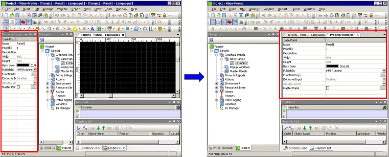

|
|
|
|
|
|
|
|
Another way to customize your Vijeo-Designer working environment is to change a tool window displayed in Docking View to a tabbed document in the main window.

Once you exit your project, the tool windows that you change to tabbed documents will not reopen as tabs. They become docking tool windows again. The only tabbed documents that you will see when you open a project are the Panel and InfoViewer.
The following occurs, in sequential order, to the main window when you right-click tabbed documents:
When you right-click a tabbed document in the main window, the following options display:
New Horizontal Tab Group - The tabbed document moves from its current tab group into a new tab group, which displays horizontally on the main window.
New Vertical Tab Group - The tabbed document moves from its current tab group into a new tab group, which displays vertically on the main window.
When you right-click a tabbed document in the current tab group, the following options display:
New Horizontal/Vertical Tab Group - Depending on whether you previously chose a new horizontal or vertical tab group, you can select this option to create another new tab group for the tabbed document.
Move to Next Tab Group - Move the tabbed document to the previously created tab group.
You can also move a tabbed document in a new tab group back to its former tab group. Right-click the tabbed document and select Move to Previous Tab Group.
To change a tool window to a tabbed document:
In the tool window's title bar, click the drop-down list icon  to open the menu.
to open the menu.
Select Tabbed Document.
To change a tabbed document to a tool window in Docking View:
Right-click the tab.
Click Tabbed Document.